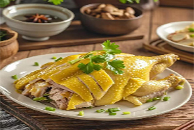
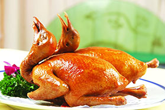
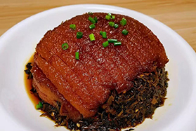
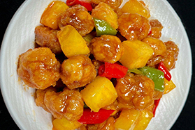

中国八大菜系之粤菜

-

脆皮烧鹅
烧鹅是广式烧腊的经典之作，尤以清远乌鬃鹅为佳。鹅肉经秘制酱料腌制后，用荔枝木炭火烤制，外皮金黄酥脆，肉质鲜嫩多汁，搭配酸梅酱食用更显风味。
-

白切鸡
白切鸡是粤菜中最具代表性的鸡肴，以“原汁原味”著称。通过“三浸三提”的沸水浸煮工艺，使鸡肉刚熟不烂，皮脆肉滑，搭配姜葱蓉或沙姜蘸料，鲜嫩爽口。清代美食家袁枚在《随园食单》中将其列为鸡菜之首，这道菜体现了粤菜对食材本味的极致追求。
-

八宝冬瓜盅
这道夏令名菜以整只冬瓜为容器，填入鸭肉、火腿、瑶柱、鲜菇等“八宝”食材，慢火炖煮。冬瓜的清香与食材的鲜美交融，汤水清淡解暑，兼具美观与实用。
-
红烧乳鸽
红烧乳鸽以皮脆肉嫩、骨香多汁闻名。选用20余日的乳鸽，先以卤水浸透入味，再经油炸至外皮酥脆，内里保留肉汁。民间有“一鸽胜九鸡”之说，这道菜不仅口感丰富，还兼具滋补功效，是粤式酒楼早茶和宴席的必点菜品。

-
明炉烤乳猪
烤乳猪是粤菜中的“宴席之王”，历史可追溯至西周时期，被称为“炮豚”，后演变为广东名菜。选用约5公斤的乳猪，经去骨、腌制后，用特制烤叉撑开，以荔枝木炭火烤制。清代更是“满汉全席”的核心菜品。

-

梅菜扣肉
虽常被误认为湘菜，梅菜扣肉实为客家传统名菜，属粤菜东江分支。精选五花肉经油炸去腻，再与梅菜同蒸，肉片肥而不腻，梅菜吸饱肉汁后咸甜交织，入口即化。其工艺融合了炸、蒸技法，体现了客家菜“香浓下饭”的特点，是家庭宴客的必备菜式。
-

糖醋咕噜肉
作为粤菜酸甜口味的代表，咕噜肉以猪肉裹面糊炸至金黄，再淋糖醋汁翻炒，外酥里嫩，酸甜开胃。其历史可追溯至清代，因外国食客喜爱酸甜风味而广传海外，成为欧美中餐馆的招牌菜。此菜还曾出现在周星驰电影《食神》中，进一步提升了国际知名度。
-

老火靓汤
粤菜养生文化的缩影，讲究“三煲四炖”，即慢火熬煮数小时，融合食材精华。常见汤品如霸王花猪骨汤、五指毛桃鸡汤等，既滋补又顺应时令。例如夏季多用冬瓜薏米祛湿，冬季则以羊肉汤驱寒。广州人甚至戏称“宁可食无菜，不可食无汤”，足见其地位。